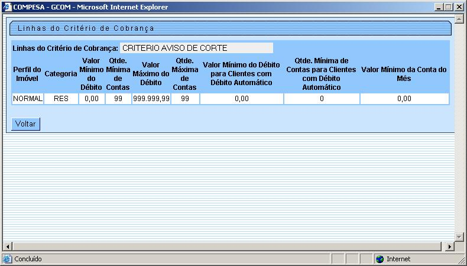

Tela - Linhas do Critério de Cobrança
Veja, abaixo, uma figura com um exemplo da tela de "
popup
" com o resultado da consulta às "Linhas do Critério de Cobrança".

Tópicos Relacionados:
Pesquisar Critério de Cobrança
Módulo: Cobrança
Critério de Cobrança